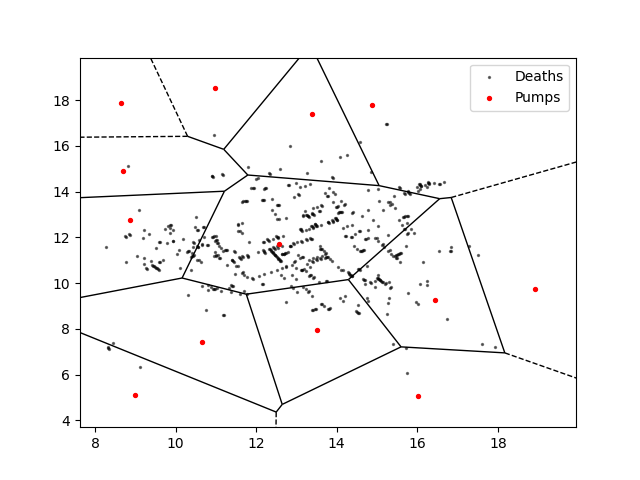

After redrawing the graph with Voronoi diagram:
Obviously, most deaths are concentrated around a pump at the middle of the diagram, instead of evenly distributed.
Thus, it can be sure that water, instead of air, is the media of cholera.
John Snow firstly used data visualization and spatial statistics to find the source of diseases.